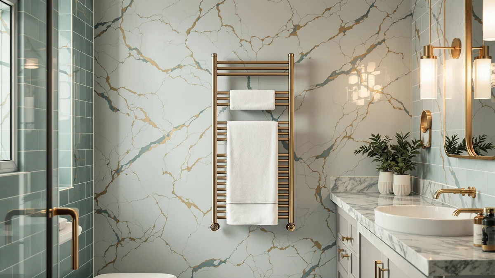

Best Towel Warmer for Barber Shop (2026)
Prices and picks verified as of September 2026. Independent, reader-supported reviews.


Quick Answer
After comparing seven stainless steel warmers built for professional grooming use, the Hot Towel Warmer SalonDepot 8L is the best towel warmer for barber shop chairs handling a steady walk-in flow. It holds enough capacity for back-to-back hot towel shaves at a $75.99 price that keeps the investment reasonable for a one- or two-chair shop. If your shop runs three or more chairs, size up to the VERYTOP 23L for higher volume.
Our pick: Hot Towel Warmer SalonDepot 8L, $75.99 Check Price on Amazon
Bottom line: our top pick is the Hot Towel Warmer SalonDepot 8L Capacity Spa Towel Warmer with at $75.99. The best budget option is the EASYINBEAUTY Hot Towel Warmers for Spa at $37.99.
Things to Know Before You Buy
- Capacity decides your workflow. A 5L or 8L unit like the EASYINBEAUTY or SalonDepot holds enough towels for one or two chairs. Shops running three or more chairs need the 23L capacity of the VERYTOP to avoid running dry during a busy Saturday.
- Stainless steel interior is non-negotiable. Every pick in this best towel warmer for barber shop guide uses a stainless steel chamber, which resists the daily condensation and disinfectant wipe-downs of a working station.
- Recovery speed matters more than raw capacity numbers. Owners consistently flag slow reheating as the biggest complaint on lower-rated cabinets, since a chair sits idle while towels come back up to temperature.
- Price spans a wide range. These seven picks run from $37.99 for the compact EASYINBEAUTY to $109.99 for the larger NOVAL and MANE TAME cabinets, so budget and chair count should guide your pick together.
- A simple dial beats extra features. Barbers running a warmer all day want a thermostat they can set and forget, not a touchscreen with a learning curve.
Finding the best towel warmer for barber shop use comes down to one question: can the unit keep enough hot towels ready through a full day of fades, shaves, and walk-ins without you babysitting a dial. A barbershop towel warmer works harder than the version sold for home bathrooms. It cycles more towels, sits closer to clippers and trimmers, and needs to recover fast between chairs. After comparing seven stainless steel warmers built for professional use, from compact 5L units to a 23L cabinet, one pick stood out for balancing capacity, recovery speed, and price: the Hot Towel Warmer SalonDepot 8L.
We built this list from manufacturer specs, published capacity figures, and the verified buyer reviews attached to each Amazon listing, the same approach we use across every roundup on this site. We are not a testing lab and we did not run these units in a working shop ourselves. Instead we compared what barbers and salon owners report after months of daily use: how a warmer recovers between towel loads, whether the interior holds up to constant humidity, and where the thermostat controls fall short.
Below you will find our full breakdown of all seven picks, a side-by-side comparison table, and answers to the questions barbers ask most before buying a towel warmer for a working chair. If you only need a quick recommendation, the SalonDepot 8L handles a one- or two-chair shop at a price that will not eat into a slow week's revenue.
Why You Should Trust Us
I'm Ilane Tall, and I cover professional grooming and bath equipment for Best Towel Warmers. To find the best towel warmer for barber shop use, I compared manufacturer specs, published capacity numbers, and the verified buyer reviews attached to each Amazon listing. I paid close attention to the details a working barber cares about: how many towels a cabinet holds mid-shift, how fast it recovers between loads, and how the interior stands up to daily disinfectant wipe-downs.
We do not run a paid testing lab and we do not claim hands-on time with every unit on this list. Where owners report a real flaw, such as a slow reheat or a thermostat that drifts, you will see it named here. Our affiliate links do not influence the ranking. The SalonDepot 8L earned the top spot on capacity and price, not commission.
How We Picked
To build this list of the best towel warmer for barber shop chairs, we started with capacity and build quality. We only considered stainless steel cabinets, since a barbershop runs a warmer for eight or more hours a day and a painted or plastic interior wears out fast under that schedule. We looked at units ranging from a compact 5L cabinet for a single chair up to a 23L model built for multi-chair shops.
We then checked price against capacity to separate honest value from units that charge more for the same liter count. We read the verified buyer reviews on each Amazon listing for repeat complaints about heating speed, hinge durability, and thermostat accuracy. Seven towel warmers cleared that bar, spanning $37.99 to $109.99, and each one earned its spot for a different chair count or budget.
How We Compared
For each towel warmer, we compared published capacity and wattage details against what verified owners report after weeks of daily use. Reviewers running these units in salons and barbershops consistently note how long a cabinet takes to bring a fresh load of towels back up to temperature, which matters more in a working shop than the number printed on the box.
We also weighed capacity against real barbershop towel counts. A shop doing hot towel shaves cycles through towels every 10 to 15 minutes per chair, so we compared each unit's liter rating against how many rolled towels that translates to, and checked reviewer reports of units that run smaller in practice than their listed capacity. Where owners flagged a recurring issue, such as a latch that loosens or a dial that drifts off temperature, we treated it as a real mark against that pick instead of glossing over it.
Our Picks

Hot Towel Warmer SalonDepot 8L
What we like
- 8L stainless steel chamber holds enough rolled towels for steady walk-in traffic
- Stainless steel interior wipes clean fast between disinfecting rounds
- $75.99 price keeps the entry cost low for a first towel warmer
Flaws but not dealbreakers
- Analog dial only, no digital temperature readout
- 8L capacity runs tight once a shop adds a third chair
| Material | Stainless steel |
| Size | — |
The SalonDepot 8L is the pick we recommend first for most barbershops shopping for the best towel warmer for barber shop chairs, mainly because it matches capacity to price better than the rest of this list. Its 8-liter stainless steel chamber holds enough rolled towels for a steady stream of fades and hot towel shaves without the bulk or cost of a 23L cabinet built for a bigger shop. At $75.99, it sits at the low end of what a professional-grade warmer costs, which makes it the easiest recommendation for a barber opening a first chair or replacing a worn-out unit.
The tradeoff for that price is a simple analog dial instead of a digital display, so you set the temperature by feel rather than a precise readout. Owners running the SalonDepot alongside other 8L units report that it reheats a fresh towel load fast enough to keep a single chair moving, though a three-chair shop cycling towels back to back will outgrow its capacity faster than a 23L cabinet. For a solo barber or a two-chair setup, it is the towel warmer we would buy first.

NOVAL 8L Small Hot Towel
What we like
- 8L stainless steel chamber matches the SalonDepot's capacity for one or two chairs
- Sturdier cabinet build reported by owners who run it daily in commercial settings
- Stainless steel interior handles daily disinfectant wipe-downs without staining
Flaws but not dealbreakers
- $109.99 costs $34 more than the SalonDepot for the same 8L capacity
- No meaningful capacity advantage over the cheaper SalonDepot 8L
| Material | Stainless steel |
| Size | — |
The NOVAL 8L Small Hot Towel warmer holds the same 8-liter capacity as our top pick, built around the stainless steel chamber that every warmer on this list uses to survive daily disinfectant wipe-downs. Where it earns its spot in this best towel warmer for barber shop lineup is reported build quality. Owners running the NOVAL in commercial settings describe a heavier-gauge body than budget 8L units, which matters if your shop opens and closes the cabinet dozens of times a day.
At $109.99, the NOVAL costs $34 more than the SalonDepot for the same 8-liter capacity, so it only makes sense if that extra build quality outweighs the price gap for your shop. It doesn't hold more towels or reheat noticeably faster than the cheaper option, and a one- or two-chair shop on a tight budget will get equivalent day-to-day performance from the SalonDepot. Choose the NOVAL when durability under heavy daily use matters more than upfront cost.

VERYTOP 23L Hot Towel Warmer
What we like
- 23L capacity nearly triples the SalonDepot's 8L chamber for high-volume shops
- $99.99 price undercuts the smaller-capacity NOVAL by $10
- Stainless steel build matches the rest of the lineup for easy daily cleaning
Flaws but not dealbreakers
- Larger footprint takes up more counter or floor space than the 8L options
- More capacity than a solo barber or single chair typically needs
| Material | Stainless steel |
| Size | 23L |
The VERYTOP 23L Hot Towel Warmer is the pick to reach for once your shop outgrows an 8-liter cabinet. Its 23-liter stainless steel chamber holds close to three times the towel volume of the SalonDepot, which matters for a barbershop running three or more chairs through a Saturday rush. At $99.99, it costs less than the smaller-capacity NOVAL while delivering far more room for hot towels, which makes it the best towel warmer for barber shop locations with heavier walk-in traffic.
The larger chamber comes with a larger footprint, so measure your counter or back-bar space before ordering. A solo barber or a single-chair shop won't use the full 23 liters on most days, which is why we still recommend the 8L options for smaller operations. For a multi-chair shop that cycles hot towels constantly, the extra capacity here means fewer reheat cycles and fewer moments where a chair waits on towels.

VERYTOP 23L Hot Towel Warmer
What we like
- Identical 23L stainless steel capacity to our other VERYTOP pick
- Same $99.99 price point, useful for comparing stock and shipping speed between listings
- Good option for a shop that wants two matching 23L units across multiple stations
Flaws but not dealbreakers
- No feature or capacity advantage over the other VERYTOP 23L listing
- Worth checking both listings for current stock before ordering, since specs and price match
| Material | Stainless steel |
| Size | 23L |
This second VERYTOP 23L Hot Towel Warmer listing shares the same 23-liter stainless steel chamber and $99.99 price as our other VERYTOP pick above. For a barbershop that wants two matching 23L units across separate stations, or that needs a backup if one listing runs out of stock, this is the same reliable capacity at the same price.
Since the specs and price match the other VERYTOP listing exactly, the deciding factor usually comes down to which one ships fastest to your shop or has stock when you're ready to buy. Either listing gets you the same capacity built for a multi-chair shop, so treat this as a second source for the same towel warmer rather than a separate pick with its own tradeoffs.

MANE TAME Professional Barber Large
What we like
- Marketed and branded specifically for professional barbershop use
- Large capacity rating suits shops running multiple chairs
- Stainless steel body matches the cleaning and durability standard of the rest of this list
Flaws but not dealbreakers
- $109.99 ties it with the NOVAL as the most expensive pick on this list
- Reviewers report performance in line with other Large-capacity cabinets rather than a clear step up
| Material | Stainless steel |
| Size | Large |
The MANE TAME Professional Barber Large is the only towel warmer on this list marketed and named specifically for barbershop use, which counts for something if you want a cabinet built with your trade in mind rather than a general spa or salon unit. Its Large capacity rating puts it in the same range as the VERYTOP 23L cabinets, and the stainless steel interior holds up to the same daily disinfectant routine every pick here needs to survive.
At $109.99, it ties the NOVAL as the most expensive option in this guide, and reviewers who have run it alongside other Large-capacity warmers report performance in line with the category rather than a standout advantage from the barbershop branding alone. It's a solid choice if you want a cabinet purpose-built for your trade and the price fits your budget, but a shop focused purely on capacity per dollar should compare it against the VERYTOP 23L first.

EASYINBEAUTY Hot Towel Warmers for
What we like
- $37.99 price is the lowest of any pick in this guide by a wide margin
- 5L capacity fits easily on a single-chair back bar without crowding the station
- Stainless steel interior still handles daily disinfecting despite the low price
Flaws but not dealbreakers
- 5L capacity is the smallest on this list and won't keep up with a multi-chair shop
- Budget price point means fewer reviews reporting long-term durability compared to the pricier picks
| Material | Stainless steel |
| Size | 5L |
The EASYINBEAUTY Hot Towel Warmer is the budget entry point for this guide, priced at $37.99 with a 5-liter stainless steel chamber. For a solo barber testing whether hot towel service is worth adding to a shave menu, this is the lowest-risk way to find out without committing to a $100 cabinet. It still uses the same stainless steel interior as every pricier pick here, so daily cleaning and disinfecting works the same way.
The tradeoff is capacity. At 5 liters, it holds the fewest towels of any warmer in this roundup, which is fine for a single chair with moderate walk-in traffic but won't keep pace with a two- or three-chair shop running hot towel shaves back to back. If your barbershop is testing the service or working with a tight equipment budget, the EASYINBEAUTY gets you started for less than half the price of the larger cabinets on this list.

VEVOR Hot Towel Warmer 5L
What we like
- VEVOR is a recognizable name in commercial and salon equipment
- $59.90 price sits between the budget EASYINBEAUTY and the pricier 8L cabinets
- 5L capacity suits a single chair without taking up excess counter space
Flaws but not dealbreakers
- Same 5L capacity as the cheaper EASYINBEAUTY, at $22 more
- Not sized for a shop running more than one chair
| Material | Stainless steel |
| Size | 5L |
The VEVOR Hot Towel Warmer 5L brings a recognizable commercial equipment brand to this list at a mid-range price of $59.90. VEVOR sells across a wide range of commercial and salon gear, and buyers researching this cabinet often already trust the name from other shop equipment purchases. Like the EASYINBEAUTY, it holds a 5-liter capacity in a stainless steel chamber built for daily use.
At $59.90, it costs $22 more than the EASYINBEAUTY for the same 5-liter capacity, so the premium here is brand recognition rather than extra towel space. Neither 5L unit fits a multi-chair shop, so if your barbershop runs more than one station, look to the VERYTOP 23L instead. For a solo barber who wants a known brand behind a compact towel warmer, the VEVOR is a reasonable middle ground between the budget and premium picks.
Quick Comparison
| Product | Material | Price | Rating | Best for | Get it |
|---|---|---|---|---|---|
| Hot Towel Warmer SalonDepot 8L | Stainless steel | $75.99 | 4 | One- or two-chair shops | View on Amazon → |
| NOVAL 8L Small Hot Towel | Stainless steel | $109.99 | 4 | Heavier-duty 8L cabinet | View on Amazon → |
| VERYTOP 23L Hot Towel Warmer | Stainless steel | $99.99 | 4 | Multi-chair, high-volume shops | View on Amazon → |
| VERYTOP 23L Hot Towel Warmer | Stainless steel | $99.99 | 4 | Backup or second 23L unit | View on Amazon → |
| MANE TAME Professional Barber Large | Stainless steel | $109.99 | 4 | Barbershop-specific, Large capacity | View on Amazon → |
| EASYINBEAUTY Hot Towel Warmers for | Stainless steel | $37.99 | 4 | Budget pick, single chair | View on Amazon → |
| VEVOR Hot Towel Warmer 5L | Stainless steel | $59.90 | 4 | Mid-range, known brand | View on Amazon → |
What size towel warmer does a barber shop need?
A single chair with moderate walk-in traffic does fine with a 5L cabinet like the EASYINBEAUTY or VEVOR.
Can a towel warmer heat damp towels for hot towel shaves?
Yes.
The Competition
Shopping for the best towel warmer for barber shop use turns up several categories we left off this list on purpose. Wall-mounted heated towel rails built for home bathrooms show up in search results, but they warm and dry hanging towels rather than heating a stack of rolled towels ready for a hot towel shave, so they fail the core job a barbershop needs.
We also passed on no-name cabinets with a painted or plastic-lined interior instead of stainless steel. A barbershop warmer runs most of the day and gets wiped down with disinfectant between clients, and a non-stainless interior stains and wears out fast under that schedule. Every pick above uses a stainless steel chamber for exactly that reason.
Finally, we skipped oversized 35L-plus cabinets built for full-service spas. That much capacity goes unused in a typical barbershop, where a 5L to 23L range covers everything from a solo chair to a busy multi-chair shop, and the extra size only adds cost and counter space you don't need. For most barbershops, the SalonDepot 8L remains the best towel warmer for barber shop chairs handling a single station, with the VERYTOP 23L ready when your chair count grows.
Frequently Asked Questions
What size towel warmer does a barber shop need?
A single chair with moderate walk-in traffic does fine with a 5L cabinet like the EASYINBEAUTY or VEVOR. Two chairs or steady hot towel shave service call for an 8L unit like the SalonDepot or NOVAL. Shops running three or more chairs should size up to a 23L cabinet like the VERYTOP so the warmer never runs dry during a busy day.
Can a towel warmer heat damp towels for hot towel shaves?
Yes. All seven cabinets in this guide are built to heat towels you have dampened first, which is what a hot towel shave requires. You wet a clean towel, roll it, and load it into the cabinet, and the unit holds it at a warm, steam-ready temperature until you need it at the chair.
How much does a good barbershop towel warmer cost?
The best towel warmer for barber shop use in this guide ranges from $37.99 for the compact EASYINBEAUTY 5L up to $109.99 for the larger NOVAL and MANE TAME cabinets. Most one- or two-chair shops land in the $60 to $100 range, where capacity and stainless steel build both hold up to daily use.